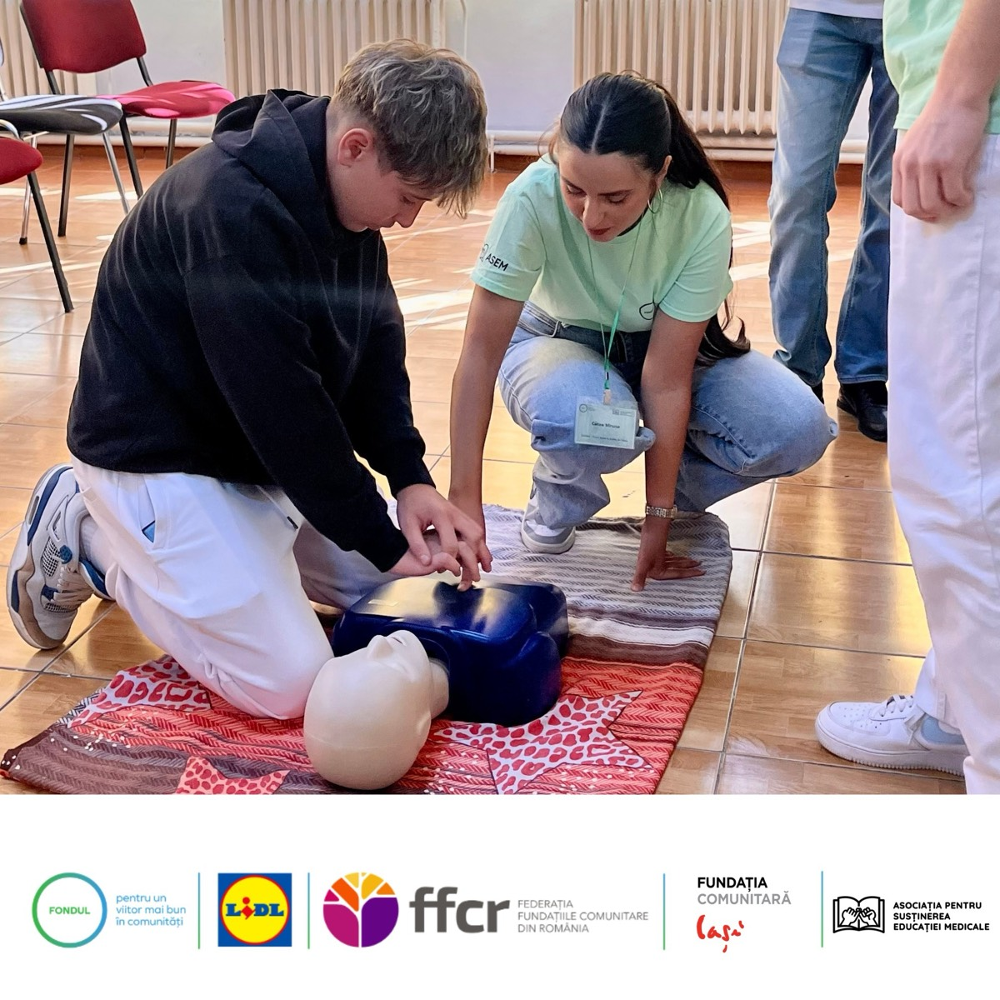
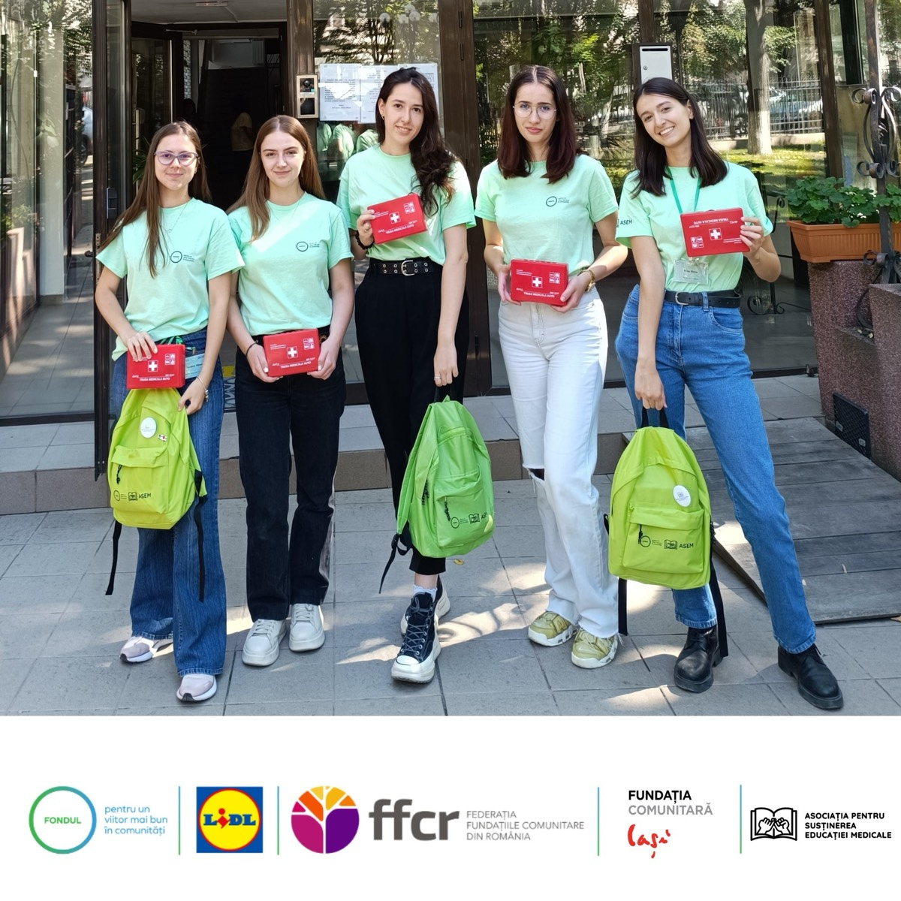
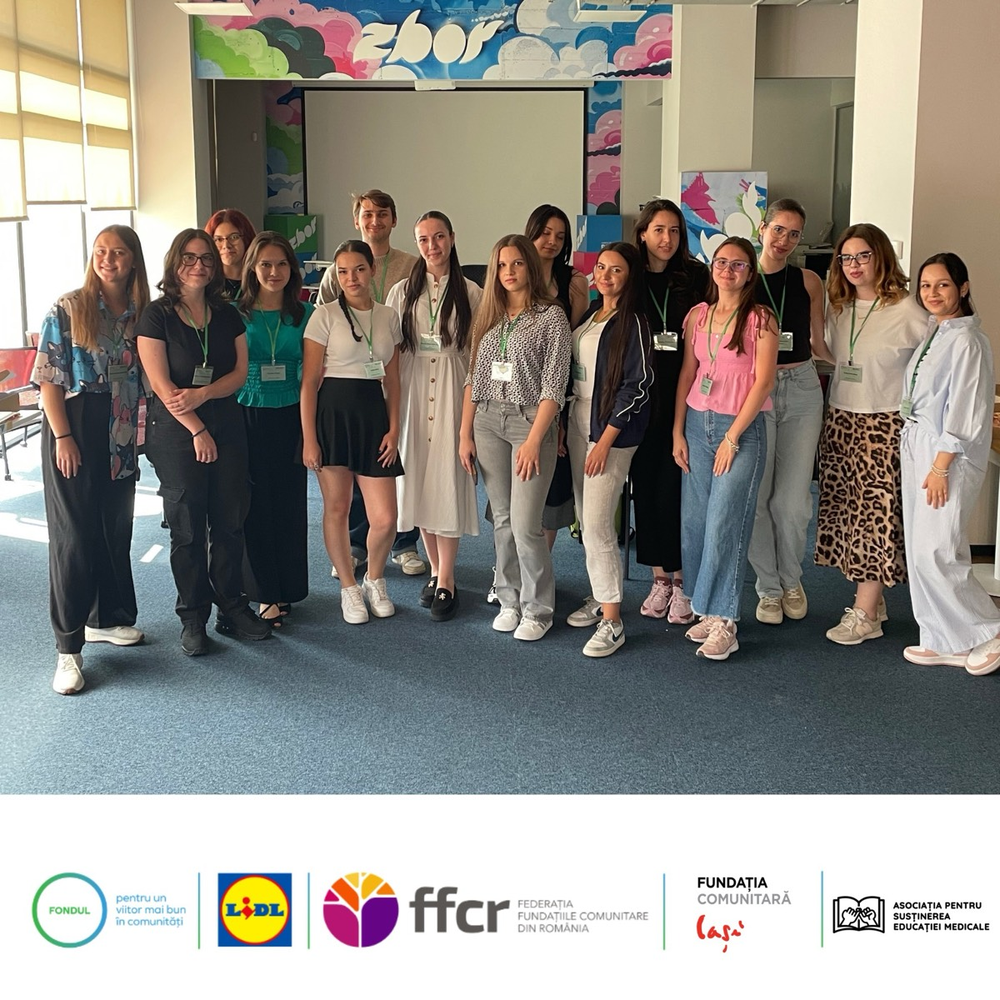
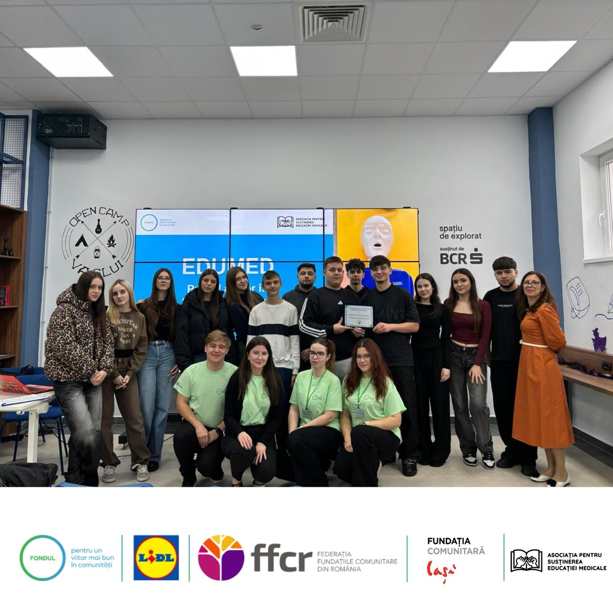

EduMed – Primul Ajutor în Școlile din Vaslui
Ateliere practice în 2 licee

Indicatori
În perioada august — noiembrie 2025, Asociația pentru Susținerea Educației Medicale a derulat proiectul „EduMed – Primul Ajutor în Școlile din Vaslui”, o serie de ateliere practice și demonstrații menite să pregătească elevii pentru a răspunde corect în situații de urgență. Sesiunile au combinat explicații teoretice cu exerciții practice, folosind manechine educaționale și truse de prim-ajutor, și au fost coordonate de voluntari studenți la medicină sub îndrumarea membrilor ASEM.
Unde, când și participare
Între august și noiembrie 2025, am organizat 46 sesiuni de instruire în două licee din municipiul Vaslui — Liceul „Ștefan Procopiu” și Liceul Teoretic „Emil Racoviță”. La activități au participat aproximativ 1200 elevi, iar echipa de implementare a cuprins 25 voluntari (studenți la medicină) care au coordonat atelierele practice și demonstrațiile.
Ce au învățat elevii
Sesiunile au fost practice și aplicate: elevii au învățat să evalueze starea unei victime și să acorde primul ajutor imediat, să folosească corect o trusă de prim-ajutor, precum și tehnici de resuscitare cardio‑respiratorie (RCR) pe manechine. De asemenea, am lucrat scenarii pentru hemoragii, arsuri, fracturi și accidente rutiere, subliniind întotdeauna importanța apelului la serviciul 112 și a păstrării calmului în situații critice.
Galerie foto




Ce au spus participanții
„Cel mai mult mi-a plăcut că am avut ocazia să practic, nu doar să ascult teorie.”
„Voluntarii au fost răbdători și au explicat pe înțelesul nostru, fără să ne judece dacă greșeam.”
Parteneri și finanțare
Implementarea proiectului a fost posibilă datorită sprijinului financiar și logistic oferit de Fundația Comunitară Iași, prin programul „Fondul pentru un viitor mai bun în comunități”, cu finanțare asigurată de Lidl România. Le mulțumim, de asemenea, școlilor gazdă, voluntarilor și partenerilor locali pentru sprijinul constant. Datorită contribuției voastre, peste o mie de elevi au dobândit cunoștințe practice esențiale pentru siguranța lor și a comunității.
Susține un proiect ca acesta
Fiecare atelier are costuri reale: transport, materiale, echipament. Le raportăm pe toate.